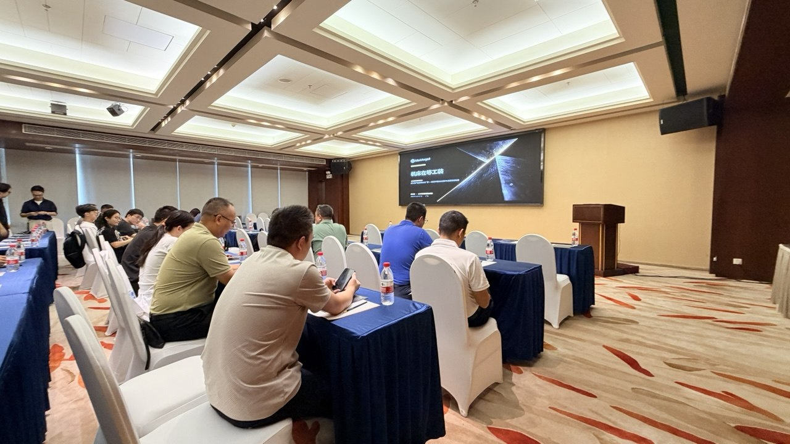
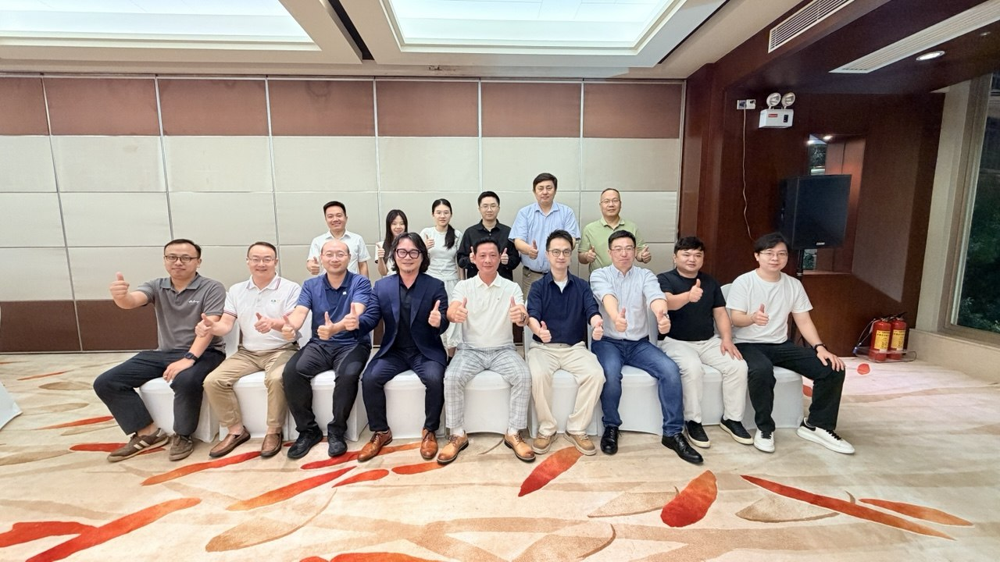

News & Insights

Markforged 與模具、刀具兩大協會在廣東談交期瓶頸
主講的 Markforged 大中華區與越南區總經理陳中欣把問題壓在一句話上：多數工廠真正的交期瓶頸不在機床本身，而在機床前面那一排等著的工裝——夾具、治具、軟爪、量測機構、防呆板。訂單已經進來，機台也在，工裝卻還在外包排隊。
全場以十個公開案例、一段拉力測試影片與展示區樣件回答同一個問題：列印出來的工裝，憑什麼敢上產線。
真正的交期瓶頸不在機床本身，而在機床前面那一排等著的工裝。
文中陳中欣的觀點 · Markforged 大中華區與越南區總經理
市場
三個風口同時放量，壓力最後都落在工裝上
會中引用的市場預估顯示，2026 年全球增材製造市場規模約 376 億美元，年複合成長率 23.9%；終端生產件的應用占比已超越打樣，成為最大應用板塊。中國則是其中成長最快的市場，預測年複合成長率 27.1%。
落到華南，陳中欣點出三條正在放量的賽道：低空經濟與無人機、人形機器人、以及 3D 列印設備出口。三者的共同點是改版節奏——機型每三到六個月改一次版，而一套鋼模開下去要等幾個月。他的結論是：客戶改版跟得上，就拿得到別人接不了的單；這三個風口的壓力，最後全部壓在工裝上。
他也點出另一個結構性問題：技術傳承。陳中欣提到自己出生在臺灣中部，彰化、臺中正是 CNC 車床發展的原地，如今要找車床師傅已經很難，年輕人不學這一行。少子化與人力斷層並非單一地區的現象，而產品複雜度與交期要求卻只增不減。
技術
連續纖維與邊印邊量測：工裝敢上產線的兩個前提
陳中欣把 Markforged 與一般 3D 列印的差別拆成材料、設備、軟體三層來談。材料層的核心是連續纖維增強（Continuous Fiber Reinforcement, CFR）：一般做法是把短切纖維摻進粒料裡，改善有限；Markforged 則是把連續纖維整條鋪進零件之中。他用了現場聽得懂的比喻——基材 Onyx（碳纖維微粒強化的尼龍）是水泥，連續碳纖維是鋼筋，水泥加鋼筋才蓋得出承重的結構。除了碳纖維，產品線另有玻璃纖維、Kevlar，以及抗靜電（ESD）、食品接觸級、阻燃等通過認證的材料，對應電子、食品產線與航太場景。
設備層在中國賣得最好的是 FX10——同一台設備可在複合材料與金屬之間切換，金屬模式支援 17-4 PH、316L、H13 工具鋼與銅；FX20 支援更高耐溫材料與更大尺寸；X7 與 X7 Field Edition 則覆蓋一般產線與資源受限的現場。金屬件走列印生胚、清洗脫脂、燒結三個步驟，支撐層採用特殊離型材料，燒結後用手即可剝除，省去金屬列印常見的切割、研磨與拋光工序；燒結收縮的補償由軟體自動計算，不需要工程師自行放大圖檔。
軟體層是 Eiger 雲端平台：瀏覽器即可操作、不必在本機安裝，也提供離線版本；列印前可模擬強度與姿態，列印中以雷射掃描量測，確保第 1 件與第 1,000 件的一致性，並產出可追溯的報告，記錄操作者、時間與版本。Markforged 亦已取得 ISO/IEC 27001:2022 資訊安全管理系統認證，由第三方稽核而非自我聲明。陳中欣在會中提醒，對模具廠而言最貴的資產不是設備而是圖檔，把圖檔交給雲端之前，應該先問對方拿得出什麼保證。
案例
十個公開案例：從在軌衛星結構件到滾齒機備件
主講以十個公開案例作為佐證，涵蓋衛星結構件、航空級零件、機器人夾爪、半導體設備工裝、模具與刀具本行，以及產線工裝與備件。Sidus Space 的 LizzieSat 衛星結構件已有 3 顆在軌，並在國際太空站外艙暴露 52 週、量測到 0 性能退化；Dixon Valve 的機器人夾爪單件成本由 290 美元降到 9 美元，降幅 96%；Toivalan Metalli 的管彎模具單件成本由 4,000 歐元降到 300 至 400 歐元，降幅 90%；BMF GmbH 的滾齒機備件交期由 14 天縮短到 1 天。
其餘包括 KST Moschkau 航空級結構件交期減少 93%、成本減少 83%；Canon 半導體設備工裝的採購成本降至原本的五分之一；John Deere 裝配線的 O 型圈工具由 500 美元降到 4 美元。陳中欣說明，這些案例都有官方公開網址可以查證，也都取得授權；沒有對外授權、由客戶自行拍片放上網路的其實更多。
現場並播放合作夥伴進行的拉力測試影片：一個手掌大小的列印件，拉到約 22,000 磅（近 10 公噸）才斷裂。茶歇時段，連續纖維件、一次成型的複雜結構件、銅製散熱件等樣件放在展示區供與會者上手比較——同樣是列印件，基礎材料可以用手折彎，加了連續纖維的則折不動。
在地布局
華南卓越中心：與捷程數控共建，驗證與培訓留在本地
陳中欣在會中說明，走心機領導品牌捷程數控（JSWAY）將成為 Markforged 在華南的卓越中心夥伴，雙方已確立合作意向、正在共同籌建：捷程數控投入場地與工程團隊，Markforged 負責技術轉移與培訓，本地通路負責設備供應與交付。
他強調，減材與增材不是互相取代的關係，而是要整合在一起；這個中心的目的很直接——讓華南的客戶不必把件寄到別的地方，在本地就能完成驗證與培訓。
下一步
四個步驟：先用自己的件驗證，再談機型與配置
主講以四個步驟收尾，也是他對現場企業的唯一建議：挑一件現在最花時間的工裝，在保密前提下試打並回報工時與材料用量，上機驗證裝夾、剛性與尺寸，再依驗證結果決定機型與配置。
「講一大堆就是要驗證，不是只有要好看，要能夠好用。」陳中欣說。會後安排一對一洽談與樣件展示，由有實際需求的單位優先。

想先用自己的件驗證？
第一步只有一件事：挑一件現在最花時間的工裝，在保密前提下試打，上機驗證裝夾、剛性與尺寸，再依結果決定機型與配置。歡迎帶著你手上最占用交期的那一件來談。
聯繫 Markforged 大中華區來源與說明
- 本文為 Markforged 大中華區自行採寫的活動報導，內容取自 2026 年 9 月 17 日現場簡報與錄音。
- 文中案例與數據均取自 Markforged 官方公開案例與當日簡報，可於 markforged.com 查證。
- 現場照片：2026 年 9 月 17 日 廣東。